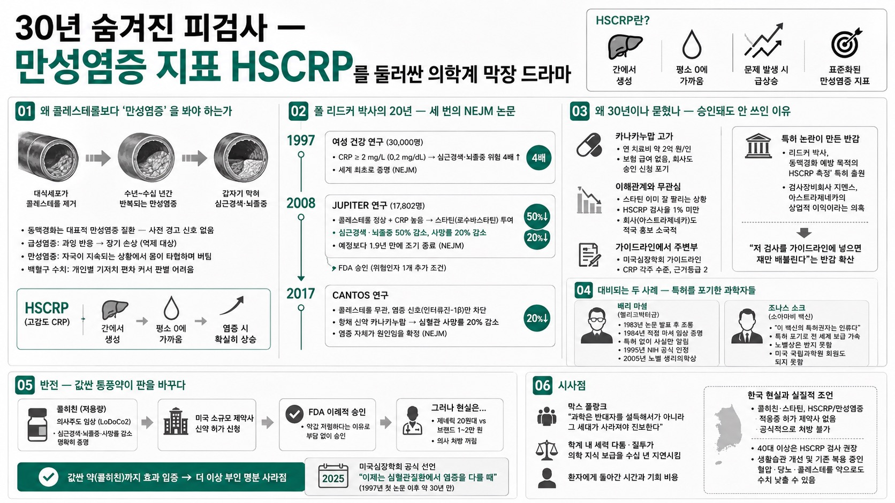

언더스탠딩(서울대병원 이승훈 교수 대담)이 심근경색·뇌졸중을 예측하는 만성염증 혈액지표 HSCRP가 왜 발견된 지 30년이 지나서야 의학계에서 인정받았는지, 그 뒤에 숨은 특허 논란과 학계 정치를 파헤친다.

01왜 콜레스테롤보다 '만성염증'을 봐야 하는가
동맥경화는 혈관벽에 쌓인 콜레스테롤을 대식세포가 제거하는 과정이 수년~수십 년간 반복되며 발생하는 대표적 만성염증 질환이다. 혈관이 좁아지는 동안에도 장기에 혈액이 도달하기만 하면 증상이 없어, 어느 날 갑자기 막혀야만 심근경색·뇌졸중으로 나타난다 — 사전 경고 신호가 없다는 게 핵심 문제다.
급성염증(뇌출혈 주변 염증 등)은 과잉 반응이 장기를 직접 죽일 수 있어 억제 대상이지만, 만성염증은 자극원이 계속 들어오는 상황에서 몸이 타협하며 버티는 과정이라 단순히 '나쁘다'고만 볼 수 없다.
백혈구(호중구) 수치는 사람마다 기저치 편차가 커 만성염증 진행을 판별하는 지표로 쓰기 어렵지만, 간에서 급성기에만 분비되는 CRP(C반응단백)는 평소 0에 가깝다가 문제가 생기면 확실하게 튀어 올라 표준화된 지표로 쓸 수 있다. 정밀 측정이 가능해지며 붙은 접두어가 HS(고감도, High Sensitivity)다.
02폴 리드커 박사의 20년 — 세 번의 NEJM 논문
1997년 하버드대 브리검여성병원 심혈관센터장 폴 리드커 박사가 3만 명 여성 건강 연구 데이터로 "CRP가 높으면(2mg/L 이상, 한국 단위 기준 0.2mg/dL) 심근경색·뇌졸중 위험이 4배 높다"는 걸 세계 최초로 증명 — 뉴잉글랜드저널오브메디슨(NEJM)에 발표.
2008년 JUPITER 연구: 콜레스테롤은 정상이지만 CRP만 높은 사람에게 스타틴(로수바스타틴)을 투여 — 심근경색·뇌졸중 50% 감소, 사망률 20% 감소라는 압도적 결과로 17,802명 임상시험이 예정보다 훨씬 이른 1.9년 만에 조기 종료됐다. FDA는 위험인자 1개 추가 조건을 달아 승인.
2017년 CANTOS 연구: 콜레스테롤과 무관하게 염증 신호(인터류킨-1β)만 차단하는 항체 신약 카나키누맙(노바티스)으로도 심혈관 사망률이 20% 줄어드는 걸 세 번째로 증명 — 염증 자체가 원인이라는 결론을 확정지었다.
03왜 30년이나 묻혔나 — 승인돼도 안 쓰인 이유
카나키누맙은 3상에 성공했지만 연 치료비가 1인당 약 2억 원에 달해 보험사 어디도 급여를 해주지 않았고, 노바티스는 승인 신청을 스스로 포기했다.
JUPITER 연구 성공 후에도 정작 미국 의사들의 HSCRP 검사율은 1% 미만에 그쳤다 — 특허가 2016년에 끝나는 상황에서 스타틴이 이미 잘 팔리고 있었기에 아스트라제네카가 굳이 논란(비판 학자들의 "TRIAL WAS FLAWED" 식 격렬한 반박)을 감수하며 적극 홍보하지 않았기 때문. 미국 심장학회 가이드라인에도 CRP는 각주 수준, 근거등급 2등급으로만 슬쩍 언급됐다.
결정적 배경은 리드커 박사가 "동맥경화 예방 목적의 HSCRP 측정" 자체에 특허를 낸 사실 — 검사장비회사 지멘스와 아스트라제네카의 상업적 이익을 위한 특허라는 소문이 의학계에 널리 퍼지며, "저 검사를 가이드라인에 넣으면 쟤만 배불린다"는 반감이 은밀히 퍼졌다(브라카 유전자 특허가 대법원에서 무효화된 사례와 유사한 논란).
04대비되는 두 사례 — 특허를 포기한 과학자들
헬리코박터균이 위궤양의 원인임을 증명한 배리 마셜 박사는 1983년 논문 발표 후 학계에서 조롱당하자, 이듬해 직접 헬리코박터 배양액을 마셔 스스로를 임상시험 대상으로 삼았다. 특허나 상업적 이득 없이 사실만 알렸고, 1995년 미국 국립보건원 공식 인정, 2005년 노벨 생리의학상을 받았다.
소아마비 백신 개발자 조나스 소크는 "이 백신의 특허권자는 인류다"라며 특허를 포기해 전 세계에 빠르게 보급됐지만, 노벨상은 받지 못했다(기초연구자 3인에게만 수여) — 유명세는 얻었지만 미국 국립과학원 회원으로도 받아들여지지 않았다.
대조적으로 리드커 박사는 특허를 냈다는 이유로 업적에 걸맞은 인정을 받지 못한 채 '논란의 인물'로 남았다는 게 이승훈 교수의 해석이다.
05반전 — 값싼 통풍약이 판을 바꾸다
미국 밖에서 호주·네덜란드 의사들이 통풍 치료제로 쓰이던 강력한 항염증제 콜히친을 저용량으로 심혈관 고위험군에 투여하는 의사주도 임상시험(LoDoCo2)을 진행 — 심근경색·뇌졸중·사망률 감소를 명확히 증명했다.
이 데이터를 본 오스트리아계 미국 소규모 제약사가 신약 허가를 신청하자, 약값이 저렴하다는 이유로(2억 원짜리 카나키누맙과 달리) FDA가 이례적으로 부담 없이 승인 — 그런데도 제네릭(20원대) 대비 브랜드약(1~2만 원)이 비싸다는 이유로 의사들이 처방을 꺼리는 등, 여전히 뿌리 깊은 불신이 이어졌다.
그러나 값싼 약(콜히친)까지 효과를 입증하자 더 이상 부인할 명분이 사라졌고, 미국심장학회는 작년(2025년경) 마침내 "이제는 심혈관질환에서 염증을 다룰 때"라고 공식 선언 — 1997년 첫 논문 이후 약 30년 만이다.
06시사점
진행자들은 이 사례를 막스 플랑크의 "과학은 반대자를 설득해서가 아니라 그 세대가 사라져야 진보한다"는 말에 빗대며, 학술적 진실과 무관한 학계 내 세력 다툼·질투가 의학 지식 보급을 수십 년 지연시킬 수 있음을 보여준다고 정리한다.
한국은 아직 콜히친·스타틴을 HSCRP/만성염증 적응증으로 허가받은 제약사가 없어 공식적으로 처방할 수 없는 상태 — 다만 40대 이상은 HSCRP 검사를 받아보고, 생활습관 개선이나 이미 복용 중인 혈압·당뇨·콜레스테롤 약으로도 수치를 낮출 수 있다는 게 실질적 조언이다.